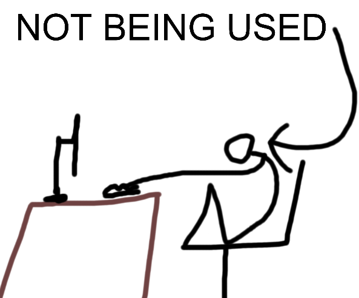

This will be a short post, not much to talk about really.
I convinced Loka to make a Tumblr account by showing him the Space Station 14 tag. I stay winning.
Speaking of the blog, I'm the new maintainer. Not much to say.
Signed, Ideas Guy Supreme
This is my first time running a blog, spare me.
